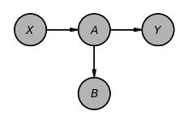
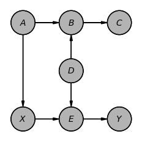
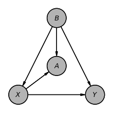
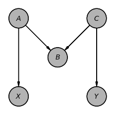
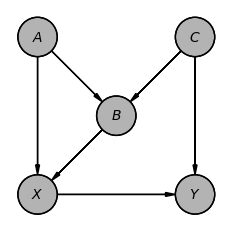
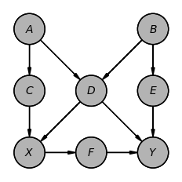
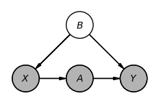

Causal Games#
This notebook walks through a few examples for building intuition about backdoor paths used in The Book of Why by Judea Pearl.
For each example, we take an example causal graph represented as a Directed Acyclic Graph (DAG), and our goal is to identify the set of deconfounders (often denoted \(Z\)) that will close all backdoor (a.k.a biasing) paths from nodes \(X\) to \(Y\). A backdoor path is any undirected path from $ X $ to $ Y $ that starts with an arrow into $ X $, i.e., contains an edge pointing into $ X $.
[1]:
# Imports
from pgmpy.base import DAG
from pgmpy.identification import Adjustment, Frontdoor
Example 1#
Although the following example is simple, many analysts include $ A $ and/or $ B $ for good measure. Because $ A $ lies on the path $ X \rightarrow `A :nbsphinx-math:rightarrow `Y $, it is a mediator; conditioning on $ A $ closes this path and attenuates the estimated total effect of $ X $ on $ Y $.
[2]:
example1 = DAG([('X', 'A'),
('A', 'Y'),
('A', 'B')],
roles={'exposures': 'X', 'outcomes': 'Y'})
example1.to_daft(node_pos={'X': (0, 0), 'Y': (2, 0), 'A': (1, 0), 'B': (1, -1)}).render()
[2]:
<Axes: >

[3]:
# @markdown Notice how there are no nodes with arrows pointing into X. Said another way, X has no parents. Therefore, there can't be any backdoor paths confounding X and Y. pgmpy will confirm this in the following way:
needs_adjustment = Adjustment().validate(example1)
print(
f"Are there any active backdoor paths? {not needs_adjustment}"
)
adjusted_graphs, success = Adjustment(variant="all").identify(example1)
print(f"No. of potential adjustment sets: {len(adjusted_graphs)}")
all_adjustment_sets = [str(graph.get_role('adjustment')) for graph in adjusted_graphs]
print(f"If so, what are the possible backdoor adjustment sets? {', '.join(all_adjustment_sets)}")
Are there any active backdoor paths? False
No. of potential adjustment sets: 1
If so, what are the possible backdoor adjustment sets? []
Example 2#
This graph is a bit more complex, but it is also trivial to solve. The key is noticing that there is only one backdoor path between $ X $ and $ Y $, which goes from $ X \leftarrow `A :nbsphinx-math:rightarrow B :nbsphinx-math:leftarrow D :nbsphinx-math:rightarrow E :nbsphinx-math:rightarrow Y $. However, as this path has a collider structure at $ B $ (a.k.a a ‘V-Structure’) because of $ A :nbsphinx-math:rightarrow B :nbsphinx-math:leftarrow `D $, this path is not active and hence not a backdoor path.
[4]:
example2 = DAG([('X', 'E'),
('A', 'X'),
('A', 'B'),
('B', 'C'),
('D', 'B'),
('D', 'E'),
('E', 'Y')],
roles={'exposures': 'X', 'outcomes': 'Y'})
example2.to_daft(node_pos={'X': (1, 1), 'Y': (3, 1), 'A': (1, 3), 'B': (2, 3), 'C': (3, 3), 'D': (2, 2), 'E': (2, 1)}).render()
[4]:
<Axes: >

[5]:
needs_adjustment = Adjustment().validate(example2)
print(
f"Are there any active backdoor paths? {not needs_adjustment}"
)
adjusted_graphs, success = Adjustment(variant="all").identify(example2)
print(f"No. of potential adjustment sets: {len(adjusted_graphs)}")
all_adjustment_sets = [str(graph.get_role('adjustment')) for graph in adjusted_graphs]
print(f"If so, what are the possible backdoor adjustment sets? {', '.join(all_adjustment_sets)}")
adjusted_graph, success = Adjustment(variant="minimal").identify(example2)
print(f"What is the minimal possible backdoor adjustment set? {adjusted_graph.get_role('adjustment')}")
Are there any active backdoor paths? False
No. of potential adjustment sets: 4
If so, what are the possible backdoor adjustment sets? [], ['A'], ['D'], ['A', 'D']
What is the minimal possible backdoor adjustment set? []
Example 3#
This example actually requires adjustment, as it has open backdoor paths. The path $ X \leftarrow `B :nbsphinx-math:rightarrow Y $ is an open backdoor path in the DAG with $ B $ as the common cause for both $ X $ and $ Y $. The other path $ X :nbsphinx-math:rightarrow A :nbsphinx-math:leftarrow B :nbsphinx-math:rightarrow `Y $ is not active because of the V-Structure at $ A $. Hence, conditioning just on the variable $ B $ would block all backdoor paths.
[6]:
example3 = DAG([('X', 'Y'),
('X', 'A'),
('B', 'A'),
('B', 'X'),
('B', 'Y')],
roles={'exposures': 'X', 'outcomes': 'Y'})
example3.to_daft(node_pos={'X': (1, 1), 'Y': (3, 1), 'A': (2, 1.75), 'B': (2, 3)}).render()
[6]:
<Axes: >

[7]:
needs_adjustment = Adjustment().validate(example3)
print(
f"Are there any active backdoor paths? {not needs_adjustment}"
)
adjusted_graphs, success = Adjustment(variant="all").identify(example3)
print(f"No. of potential adjustment sets: {len(adjusted_graphs)}")
all_adjustment_sets = [str(graph.get_role('adjustment')) for graph in adjusted_graphs]
print(f"If so, what are the possible backdoor adjustment sets? {', '.join(all_adjustment_sets)}")
Are there any active backdoor paths? True
No. of potential adjustment sets: 1
If so, what are the possible backdoor adjustment sets? ['B']
Example 4#
This DAG structure is commonly known as the “M Bias” example because of the shape of the DAG. This is also a common example where classical analysts might want to adjust/control for the variable $ B $ as it is a pre-treatment variable. However, as we can see that the only backdoor path $ X \leftarrow `A :nbsphinx-math:rightarrow B :nbsphinx-math:leftarrow C :nbsphinx-math:rightarrow Y $ is not active due to the V-structure at $ B $. Hence, no adjustment is needed in this case. But if we adjust for the variable $ B $, it would activate the V-structure, making the path $ X :nbsphinx-math:leftarrow A :nbsphinx-math:rightarrow B :nbsphinx-math:leftarrow C :nbsphinx-math:rightarrow `Y $ active.
[8]:
example4 = DAG([('A', 'X'),
('A', 'B'),
('C', 'B'),
('C', 'Y')],
roles={'exposures': 'X', 'outcomes': 'Y'})
example4.to_daft(node_pos={'X': (1, 1), 'Y': (3, 1), 'A': (1, 3), 'B': (2, 2), 'C': (3, 3)}).render()
[8]:
<Axes: >

[9]:
needs_adjustment = Adjustment().validate(example4)
print(
f"Are there any active backdoor paths? {not needs_adjustment}"
)
adjusted_graphs, success = Adjustment(variant="all").identify(example4)
print(f"No. of potential adjustment sets: {len(adjusted_graphs)}")
all_adjustment_sets = [str(graph.get_role('adjustment')) for graph in adjusted_graphs]
print(f"If so, what are the possible backdoor adjustment sets? {', '.join(all_adjustment_sets)}")
Are there any active backdoor paths? False
No. of potential adjustment sets: 4
If so, what are the possible backdoor adjustment sets? [], ['A'], ['C'], ['A', 'C']
Example 5#
This is the last example in The Book of Why. In this case, we have two backdoor paths,
$ X \leftarrow `A :nbsphinx-math:rightarrow B :nbsphinx-math:leftarrow C :nbsphinx-math:rightarrow `Y $
$ X \leftarrow `B :nbsphinx-math:leftarrow C :nbsphinx-math:rightarrow `Y $.
The first backdoor path is not active due to the V-structure at $ B $, however, the second one is active. To control for the second backdoor path, one option is to condition on the variable $ B $, but doing that makes the first backdoor path active, requiring additionally conditioning on $ A $ or $ C $. Another possibility is to simply condition on $ C $ which would block the second backdoor path without activating the first one.
[10]:
example5 = DAG([('A', 'X'),
('A', 'B'),
('C', 'B'),
('C', 'Y'),
('X', 'Y'),
('B', 'X')],
roles={'exposures': 'X', 'outcomes': 'Y'})
example5.to_daft(node_pos={'X': (1, 1), 'Y': (3, 1), 'A': (1, 3), 'B': (2, 2), 'C': (3, 3)}).render()
[10]:
<Axes: >

[11]:
needs_adjustment = Adjustment().validate(example5)
print(
f"Are there any active backdoor paths? {not needs_adjustment}"
)
adjusted_graphs, success = Adjustment(variant="all").identify(example5)
print(f"No. of potential adjustment sets: {len(adjusted_graphs)}")
all_adjustment_sets = [str(graph.get_role('adjustment')) for graph in adjusted_graphs]
print(f"If so, what are the possible backdoor adjustment sets? {', '.join(all_adjustment_sets)}")
Are there any active backdoor paths? True
No. of potential adjustment sets: 5
If so, what are the possible backdoor adjustment sets? ['C'], ['A', 'B'], ['A', 'C'], ['B', 'C'], ['A', 'B', 'C']
Example 6#
This example is drawn from Causality by Pearl on p. 80. This is similar to Example 5, but because $ D $ is now a common cause of $ X $ and $ Y $, it requires us to condition on $ D $. But similar to the last example, this leads to the activation of the other path $ X \leftarrow `C :nbsphinx-math:leftarrow A :nbsphinx-math:rightarrow D :nbsphinx-math:leftarrow B :nbsphinx-math:rightarrow E :nbsphinx-math:rightarrow `Y $. To block this path, we will need to additionally condition on one of: $ C $, $ A $, $ B $, or $ E $.
[12]:
example6 = DAG([('X', 'F'),
('F', 'Y'),
('C', 'X'),
('A', 'C'),
('A', 'D'),
('D', 'X'),
('D', 'Y'),
('B', 'D'),
('B', 'E'),
('E', 'Y')],
roles={'exposures': 'X', 'outcomes': 'Y'})
example6.to_daft(node_pos={'X': (1, 1), 'Y': (3, 1), 'A': (1, 3), 'B': (3, 3), 'C': (1, 2), 'D': (2, 2), 'E': (3, 2), 'F': (2, 1)}).render()
[12]:
<Axes: >

[13]:
needs_adjustment = Adjustment().validate(example6)
print(
f"Are there any active backdoor paths? {not needs_adjustment}"
)
adjusted_graphs, success = Adjustment(variant="all").identify(example6)
print(f"No. of potential adjustment sets: {len(adjusted_graphs)}")
all_adjustment_sets = [str(graph.get_role('adjustment')) for graph in adjusted_graphs]
print(f"If so, what are the possible backdoor adjustment sets? {', '.join(all_adjustment_sets)}")
adjusted_graph, success = Adjustment(variant="minimal").identify(example6)
print(f"What is the minimal possible backdoor adjustment set? {adjusted_graph.get_role('adjustment')}")
Are there any active backdoor paths? True
No. of potential adjustment sets: 15
If so, what are the possible backdoor adjustment sets? ['D', 'B'], ['A', 'D'], ['D', 'E'], ['C', 'D'], ['A', 'D', 'B'], ['D', 'B', 'E'], ['C', 'D', 'B'], ['A', 'D', 'E'], ['C', 'A', 'D'], ['C', 'D', 'E'], ['A', 'D', 'B', 'E'], ['C', 'A', 'D', 'B'], ['C', 'D', 'B', 'E'], ['C', 'A', 'D', 'E'], ['C', 'A', 'D', 'B', 'E']
What is the minimal possible backdoor adjustment set? ['D', 'E']
Example 7#
This example shows an example where a backdoor adjustment is not possible. In this case, $ B $ is a latent variable and hence can not be conditioned on, making it impossible to block the backdoor path $ X \leftarrow `B :nbsphinx-math:rightarrow `Y $. However, another criterion called the Frontdoor Criterion can be applied here to identify the effect of $ X $ on $ Y $.
[14]:
example7 = DAG([('X', 'A'), ('A', 'Y'), ('B', 'X'), ('B', 'Y')], latents={'B'}, roles={'exposures': 'X', 'outcomes': 'Y'})
example7.to_daft(node_pos={'X': (1, 1), 'Y': (3, 1), 'A': (2, 1), 'B': (2, 2)}).render()
[14]:
<Axes: >

[15]:
needs_adjustment = Adjustment().validate(example7)
print(
f"Are there any active backdoor paths? {not needs_adjustment}"
)
adjusted_graphs, success = Adjustment(variant="all").identify(example7)
all_adjustment_sets = [str(graph.get_role('adjustment')) for graph in adjusted_graphs]
print(f"Are there any set of variables to block the backdoor paths? {success}")
adjusted_graph, success = Frontdoor().identify(example7)
print(f"Possible frontdoor adjustment variables?: {adjusted_graph.get_role('frontdoor')}")
Are there any active backdoor paths? True
Are there any set of variables to block the backdoor paths? False
Possible frontdoor adjustment variables?: ['A']
[ ]: